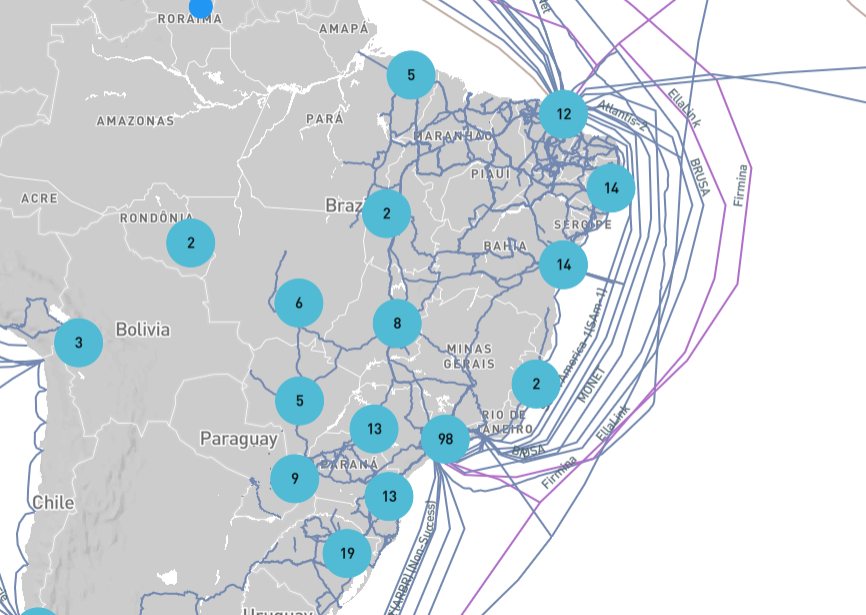
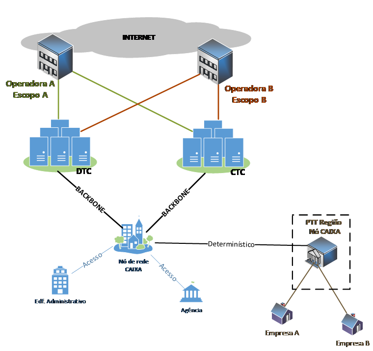

Redes 7
Arquitetura de Referência
Este documento de Arquitetura de Referência compreende a representação dos elementos da Solução de REDE 7 do Portfólio de Redes de Comunicação da CAIXA, denominada “Internet”.
Objetivo
Implementar a conectividade da CAIXA com a Internet, visando acesso dos seus colaboradores e a disponibilização dos seus serviços aos seus clientes e cidadãos.
Introdução
INTERNET
A rede mundial de computadores é uma infraestrutura compartilhada de centenas de circuitos, equipamentos de switching e roteamento, de diversas tecnologias e gerações formando um conjunto de diversas redes.
Esta rede surgiu como uma rede de segurança militar, migrou para uma rede de universidades para posteriormente tornar-se a rede atual, aberta a todos.
Como toda a rede pública, o acesso à mesma é realizada somente através de entidades autorizadas para isso, estabelecidas como provedoras.
No caso do Brasil, são as operadoras de Telecomunicações autorizadas pela ANATEL as únicas capazes de disponibilizar esse acesso.
Toda essa rede é sustentada em circuitos físicos, de fibra ótica ou outras tecnologias, que atravessam grandes distâncias, inclusive via leitos oceânicos, e são derivados em pontos de acesso específicos, providos e acessíveis somente por esses provedores.
No Brasil, por exemplo, segundo dados da Infrapedia (https://www.infrapedia.com/app), as principais entradas de cabeamentos oceânicos ficam em Fortaleza, Rio de Janeiro e Santos:

Fonte: https://www.infrapedia.com/app, em 28/01/2022.
Outro ponto importante é que esta rede é toda baseada na pilha de endereçamentos TCP/IP, com roteamentos através de BGP.
Assim, os endereços IP dessa rede, denominados de públicos, e os identificadores BGP, conhecidos por ASN (Autonomous System Number), são Identificadores únicos, capazes de identificar inequivocamente uma rede ou um host.
Os endereços IP são distribuídos mundialmente pela IANA (Internet Assingned Numbers Authority), uma organização sem fins lucrativos, operada por outra entidade também sem fins lucrativos chamada PTI (Public Technical Identifiers). Esta última, afiliada ao ICANN (The Internet Corporation for Assigned Names e Numbers).
-
O ICANN é uma entidade sem fins lucrativos, não governamental, aberta à comunidade de forma organizada, que congrega representantes de todo o mundo para as definições referentes à gestão da Internet e dos seus recursos, sustentada pelas seguintes entidades de apoio: a Organização de Apoio a Endereços (ASO), a Organização de Apoio a Nomes com Códigos de Países (ccNSO) e a Organização de Apoio a Nomes Genéricos (GNSO).
-
A ASO é composta por representantes de 5 RIR (Regional Internet Registries):
-
Centro de Informações de Rede da África (AfriNIC — African Network Information Center), responsável pelo continente africano;
-
Centro de Informações de Rede Ásia-Pacífico (APNIC — Asia Pacific Network Information Centre), que cobre a região ÁsiaPacífico, incluindo Japão, Coreia, China e Austrália;
-
Registro Americano para Números na Internet (ARIN — American Registry for Internet Numbers), que controla o Canadá, algumas ilhas do Caribe e Atlântico Norte, e os Estados Unidos;
-
Registro de Endereços na Internet para América Latina e Caribe (LACNIC — Latin American and Caribbean Internet Addresses Registry), responsável pela América Latina e Caribe;
-
Réseaux IP Européens (RIPE NCC), abrangendo Europa, Oriente Médio e partes da Ásia.
-
-
Nesta organização, os países associados possuem um domínio de nomes específico, assim como faixas de endereços públicos e ASN. O do Brasil é o “.br”.
No Brasil, o CGI.br (Comitê Gestor da Internet), criado em 1995, é o responsável pelas políticas e definições acerca do uso dos endereços IP e nomes no domínio .br e troca informações com o LACNIC acerca destas implementações.
-
O NIC.br (Núcleo de Informação e Coordenação do Ponto BR) é o responsável pela implementação das decisões e políticas definidas pelo CGI.br e é dividido em 5 centros especializados (fonte: https://nic.br/perfil/):
-
Registro.br: responsável pelas atividades de registro e manutenção dos nomes de domínios que usam o .br.
-
CERT.br (Centro de Estudos, Resposta e Tratamento de Incidente de Segurança no Brasil): É Grupo de Resposta a Incidentes de Segurança (CSIRT) de responsabilidade nacional de último recurso com atividades de tratamento de incidentes, conscientização social da ciultura de segurança, fomentar a criação de novos CSIRT, além de trocar informações sobre ataques e segurança com outros CSRITs internacionais;
-
Cetic.br (Centro Regional de Estudos para o Desenvolvimento da Sociedade da Informação): Geração de informações e indicadores diversos acerca da Internet e seu uso;
-
Ceptro.br (Centro de Estudos e e Pesquisas em Tecnologia de Redes e Operações): é responsável por projetos que visam a melhorar a qualidade da Internet no Brasil e disseminar seu uso, com especial atenção para seus aspectos técnicos e de infraestrutura.
-
Ceweb.br (Centro de Estudos sobre Tecnologias Web): conduzir ações e iniciativas que promovam o contínuo desenvolvimento da Web e de seus princípios originais, colaborando para que seja uma rede aberta, universal e acessível a todos.
-
IX.br (Brasil Internet Exchange): visa à instalação e operação de Pontos de Troca de Tráfego Internet (PTTs) e provê a infraestrutura necessária para a interligação direta dos Sistemas Autônomos (ASs) que compõem a Internet.
-
W3C Chapter São Paulo: Ações para o desenvolvimento e fortalecimento dos padrões web.
-
-
Assim, todas as entidades que quiserem ter acesso à Internet, devem contratar uma ou mais operadoras para o acesso físico, além de, se assim quiserem, contratarem e registrarem, junto ao NIC.br, sua faixa de endereços, nomes e ASN.
-
A CAIXA possui atualmente registros de faixas de IPV4 (200.201.160.0/20), IPV6 (2801:b4::/32), ASN (20116), assim como 73 domínios, como: caixa.gov.br, caixa.com.br, dentre outros.
PONTOS DE TROCA DE TRÁFEGO
Tendo em vista a grande estrutura de circuitos físicos que sustentam a Internet, em muitas situações, os caminhos intercontinentais elevam os tempos de resposta dos circuitos, devido às grandes distâncias.
Pensando nisso, os órgãos reguladores regionais, responsáveis pelas gestões dos recursos da internet, disponibilizam centros ou nós de interconexão locais, conhecidos como pontos de troca de tráfego (IX – Internet Exchange).
Nesses locais, basicamente compostos por switches de alta capacidade, as entidades usuárias e provedoras de tráfego internet podem se conectar, e se comunicarem diretamente, com uso de endereços públicos da Internet, sem a necessidade de uso da estrutura mais tradicional.
Com isso, todos os que estejam diretamente conectados nesses pontos, trocam suas informações de maneira mais rápida, com latências basicamente de circuitos locais.
No Brasil, existem 33 PTT, disponibilizados e administrados pelo grupo IX.br, pertencente ao NIC.br.
-
Para disponibilização dos acessos, as entidades interessadas devem:
-
Possuir um ASN;
-
Prover um circuito privado direto ao PTT;
-
Pagarem uma taxa de administração para o IX.br.
-
-
Os PTT são exclusivamente locais, não se interligam fisicamente, sendo proibida a realização de roteamentos entre os PTT para quem não possui ASN de transito.
SEGURANÇA CIBERNÉTICA
Os acessos à Internet são essenciais aos negócios, mas exigem extremos cuidados com a segurança.
Nesse sentido, todos os acessos disponibilizados à essa rede, sejam via acessos contratados ou mesmo via PTT, devem ser implementados com toda a infraestrutura de segurança cibernética necessária.
Além disso, é importante assegurar que os provedores de acesso possuam todas as proteções necessárias para suas próprias redes, assim como para os clientes.
Arquitetura definida
A topologia básica da arquitetura definida encontra-se a seguir:

O modelo de topologia é composto pelos seguintes elementos:
-
Sites das Operadoras;
-
Datacenters CAIXA
-
Pontos de troca de tráfego;
-
Unidades CAIXA;
As interligações entre os sites das Operadoras e os datacenters CAIXA deverão ser realizados através de circuitos determinísticos e redundantes, funcionando em alta disponibilidade;
As operadoras deverão implementar seus sites e acesso à Internet nas seguintes características mínimas:
-
Possuir conexões com backbones nacionais e internacionais;
-
Garantir conexão com backbone internacional de 20 Gbps;
-
Implementar latência máxima de 200 ms com backbones internacionais (PTT internacional de vinculação da Operadora);
-
Garantir saída internacional a no máximo, 2 saltos, contados a partir da saída da CAIXA;
-
Perda média mensal de pacotes em seu backbone de 1,2%, no máximo, medidos a partir da saída da CAIXA;
-
Autorizada para o serviço pela ANATEL;
-
Suportar BGP v4 e às extensões RFC 2545, RFC 1771 e RFC 2858 em IPV4 e IPV6;
-
Implementar autenticação das sessões BGP através de MD5.
As interligações das Operadoras com a CAIXA deverão obedecer às seguintes características:
-
Estarem implementadas em equipamentos da própria operadora, dispostos nos datacenters da CAIXA;
-
Interfaces entregues conforme especificado para os switches roteadores de borda CAIXA;
-
Mínimo de 40 Gbps de acessos disponibilizado à Internet;
-
Suporte a interfaces de 100 Gbps;
-
Interface em fibra ótica;
-
Suportar link Aggregation;
-
Duplicidade de última milha, com dupla abordagem.
- A mudança de abordagem deverá ser automática, a ocorrer em 50 ms no máximo, na ocorrência de falhas ou em comandos executados.
-
Implementar LACP (Link Aggregation Control Protocol) com o roteador da CAIXA;
-
Implementar Full Routing com os roteadores da CAIXA.
Juntamente com a conectividade, também deverão ser contratados os serviços de proteção e segurança, conforme a seguir:
-
Implementar capacidade de criar e analisar reputação de IP, com base própria, gerada durante filtragem de ataques, e com informações obtidas da interligação com os principais centros mundiais de reputação de IP;
-
Implementar proteção ativa contra ataques de DDoS (Distributed Denial of Services);
-
Implementar mitigação automática de ataques utilizando múltiplas técnicas como White List, Black List, limitação de taxa, técnicas desafio-resposta, descarte de pacotes mal formados, técnicas de mitigação de ataques aos protocolos HTTP e DNBS, bloqueio por localização geográfica de endereços IP.
-
Empregar mecanismos de proteção contra todos os ataques que façam uso não autorizado de recursos de rede, tanto para IPV4 quanto para IPV6, como os seguintes:
-
Ataques de inundação (Bandwidth Flood), incluindo flood de UDP ICMP e TCP;
-
Ataques à pilha TCP, incluindo mal uso de flags TCP, ataques de RST e FIN, SYN Flood e TCP Idle Resets;
-
Ataques que utilizam fragmentação de pacotes, seja IP, TCP e UDP;
-
Ataques de Botnets, Worms e ataques do tipo Ip Spoofing;
-
Ataques à camada de aplicação, incluindo protocolos HTTP e DNS, mantendo uma lista dinâmica de endereços IP bloqueados, retirando dessa lista endereços que não enviarem mais requisições maliciosas após algum período de tempo;
-
Ataques GET/POST floods, PSH Floods, HTTP(S) floods, Smurfing, Slowloris, Botnets, Fragging Atack;
-
Amplificação de DNS, NTP, CharGen, SSDP e SNMP;
-
Ataques volumétricos
-
DDoS
-
-
Disponibilização dos seguintes serviços de segurança:
-
Centro Operacional de Segurança (SOC – Security Operation Center), com as seguintes características e funcionalidades:
-
Funcionamento ininterrupto para as ações de proteção, assim como para acionamentos pela CAIXA;
-
Manter a CAIXA informada sobre todos os incidentes de segurança ocorridos, der maneira tempestiva;
-
-
Implementar medidas preventivas, corretivas e mitigatórias de ataques volumétricos, que tendam ou saturem as conexões do AS CAIXA, como bloqueio seletivo por blocos IP de origem nos AS que transitam os mesmos, utilizando técnicas de Remotre Triggered Black Hole, por exemplo.
-
Manter sempre atualizadas as assinaturas de ataques usadas pelas soluções de detecção e mitigação;
-
Detectar os ataques com até 5 minutos de sua ocorrência.
-
Implementar capacidade de mitigação de ataques de, no mínimo, 500 GB.
-
PONTOS DE TROCA DE TRÁFEGO
-
Os Pontos de Troca de Tráfego, pelas suas características regionais, devem ser conectados por circuitos oriundos dos nós de rede CAIXA mais próximos.
-
A implementação dessa comunicação somente será possível quando o nó de rede que prover a conexão estiver com a infraestrutura de segurança cibernética equivalente, em termos proporcionais, ao providos nas saídas dos Datacenters.
-
Isso evita a implementação de backdoor ou de um elo fraco na cadeia de segurança cibernética da CAIXA.
-
Com essa estrutura segura implementada, a interconexão com o nó de rede deverá ser realizada através de circuitos com as seguintes características:
-
Alta disponibilidade, com distinção de acesso físico;
-
Determinísticos ou estatísticos;
-
Tempo de resposta máximo de 30 ms;
-
Capacidade mínima de 1 Gbps.
-
Outras considerações
A Operadora deverá incluir na sua solução um método de sincronização certificada de seus horários com a Hora Legal Brasileira (Fonte da Hora Legal: Observatório Nacional).
O intervalo de endereços de rede IP para as Unidades CAIXA não deverá ser convertido por NAT e deverão fazer parte do intervalo a ser fornecido pela CAIXA.
Referências
-
Sobre o ICANN e sua organização: > https://www.icann.org/en/system/files/files/participating-08nov13-pt.pdf
-
Sobre o CGI.br: https://cgi.br/sobre/;
-
Sobre o NIC.br: https://www.nic.br/sobre/;
Histórico da revisão
| Data | Versão | Descrição | Autor |
|---|---|---|---|
| 27/01/2022 | 1.0 | Emissão inicial do documento | Adriano Soriano |